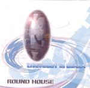

| Artist: | Round House |
| Title: | Live@2001 In Osaka |
| Label: | Music Term Presents MTP-101 |
| Length(s): | 66 minutes |
| Year(s) of release: | 2001 |
| Month of review: | [11/2003] |
| 1) | A Last Judgment | 4.06 |
| 2) | Romantic Rally | 8.25 |
| 3) | Out Of 3-Dimension | 8.34 |
| 4) | Prayer | 7.41 |
| 5) | Sweet Love | 6.38 |
| 6) | A Tear Of Sphinx | 6.03 |
| 7) | Tour Of The Deep Ocean | 14.39 |
| 8) | Jin.Zo-Ni.N.Gen | 4.48 |
| 9) | Super Warp | 5.02 |
Very different is the extremely mellow, may I say cheesy, Romantic Rally. The bad thing is that the track is long as well. The song also has some more funky elements, but that certainly does not help. The guitar parts cropping up here and there are not bad, but not very distinctive either. Typical seventies jazzrock. A bit of Crimson comes up at the end (21st Century Schizoid Man).
Out Of 3-Dimension is a slow, somewhat ponderous piece with some lighter, dancing elements. This comes quite close to the old Camel. Plenty of melody and although quite mellow, the opening is quite atmospheric. The guitar playing reminds of Greece.
Mellow keyboards tinkle on Prayer, which has something of a Christmas atmosphere. The guitar lone and bluesy, and very melodic. There For that it is a bit too careful. But the semblance is there. All in all, a bit too obvious, although the guitar and keys can sound quite dissonant and wayward at times. The pace goes up a bit but it stays a bouncy affair. The keyboards sizzle towards the end.
Sweet Love is not bound to be a heavy track. In fact, we are back to how Prayer opened: melodic and mellow. The guitartist is good, especially during the softer slower parts where any error he makes will be plainly audible. But musically this is not my style. I am hoping for something a bit more proggy. A Tear Of Sphinx might be just that. At least, I have no reason to believe by the title that this is going to be a similar affair. There is an air of Middle Eastern mystery that pervades. Later the guitar cries out, but the music is again a bit too accessible for my tastes. There is a sense of urgency in the playing tho.
Tour Of The Deep Ocean is a long one. Almost 15 minutes in length, this is the epic track. Plenty of sad violin in the opening, slow and mysterious. Then the guitar comes in, Crimsonesque and all. Nice dark atmosphere and very good build up lead to sizzling keyboards. This is good stuff. A bit repetitive in places, but showing both melody, power and a bit of flashiness. However, it also includes some more introspective parts where the guitar cries out, quite lonely. Some of the melodies could come straight out of a Focus album. After this more accessible and melodic middle part, the repetitive drone of the beginning returns, getting the tension back into the song.
Jin.Zo-Ni.N.Gen is a title track of one of the bands albums. Do not ask me what it means. Again, this is one of the more rocky and off-beat tracks. The playing is a bit rough here. This one is similar in style to the previous song with strong sense of urgency and not without the necessary melody. Super Warp is the closer, more in the line of the usual jazzrock.